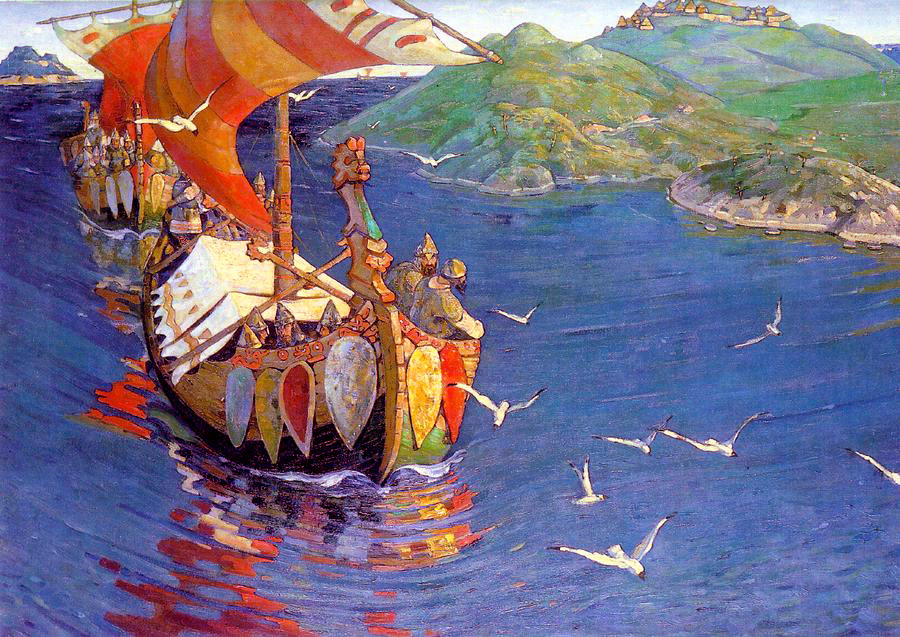
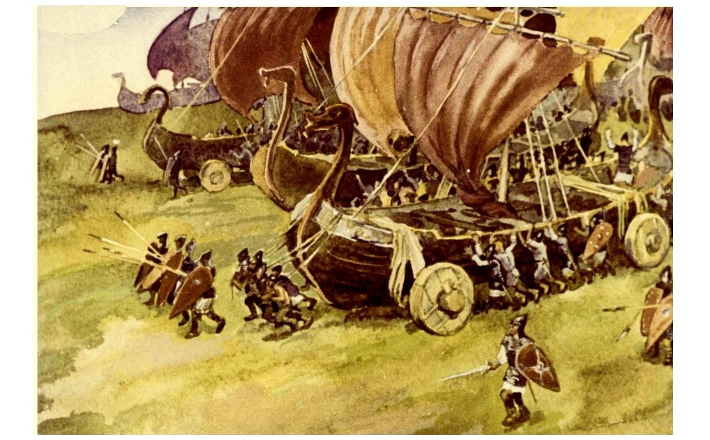
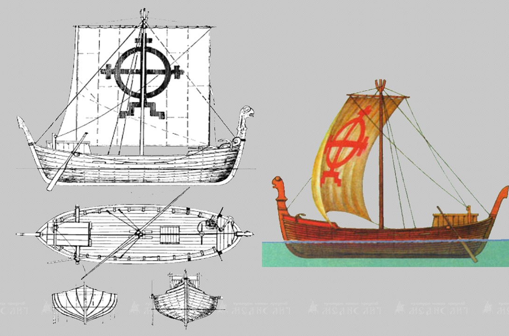
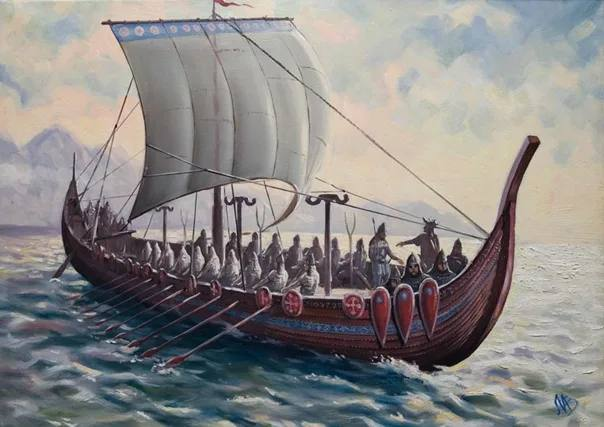
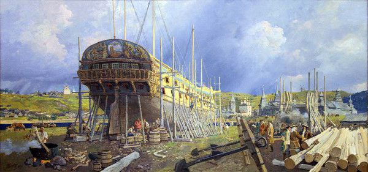
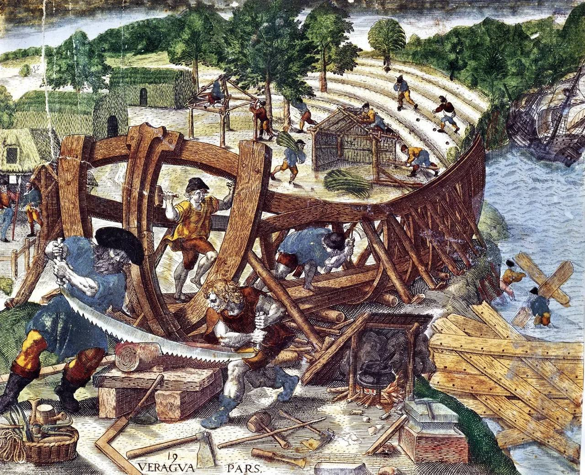

Введение
Кораблестроение играло важнейшую роль в истории Руси, развиваясь вместе с торговлей и военными нуждами.

Корабли IX–X веков
Ладьи и военные суда этого периода широко использовались в походах, таких как знаменитый поход Олега на Царьград.

Развитие XI–XIII века
Изменения в конструкции судов и влияние Византии укрепили русское кораблестроение.

Торговый транспорт XIV–XV веков
Река Волга и другие водные пути стали основой экономики Руси, поддерживаемой ладьями и стругами.

Состояние кораблестроения XVI–XVII веков
Судостроение находилось в стадии застоя, но эпоха Алексея Михайловича стала началом реформ.

Заключение
Корабли играли важную роль в военной, торговой и экономической жизни Руси.

Модель корабля
Участники проекта
- Петрова Анастасия Павловна
- Абросимова Дарья Константиновна
- Мезенцева Вероника Денисовна
- Вандышева Кира Витальевна
- Устьянцева Мария Евгеньевна
- Андреева Анастасия Андреевна
- Якимова Валерия Михайловна
- Разбежкин Дмитрий Вячеславович